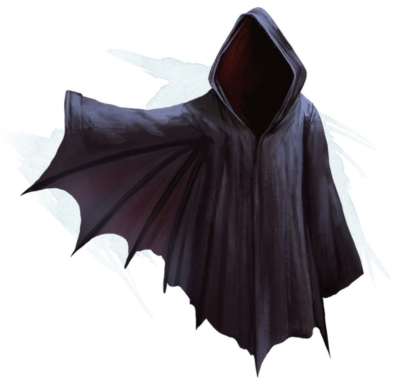

Cape de vol
[ Wings of Flying ]
Objet merveilleux, rare (nécessite un lien)
Lorsque vous portez cette cape, vous pouvez utiliser une action pour prononcer son mot de commande. Cela transforme la cape en une paire d'ailes de chauve-souris ou d'oiseau sur votre dos pendant 1 heure, ou jusqu'à ce que vous répétiez le mot de commande au prix d'une action. Les ailes vous donnent une vitesse de vol de 18 mètres. Quand elles disparaissent, vous ne pouvez plus les utiliser de nouveau durant 1d12 heures.
Dungeon Master´s Guide (SRD)
